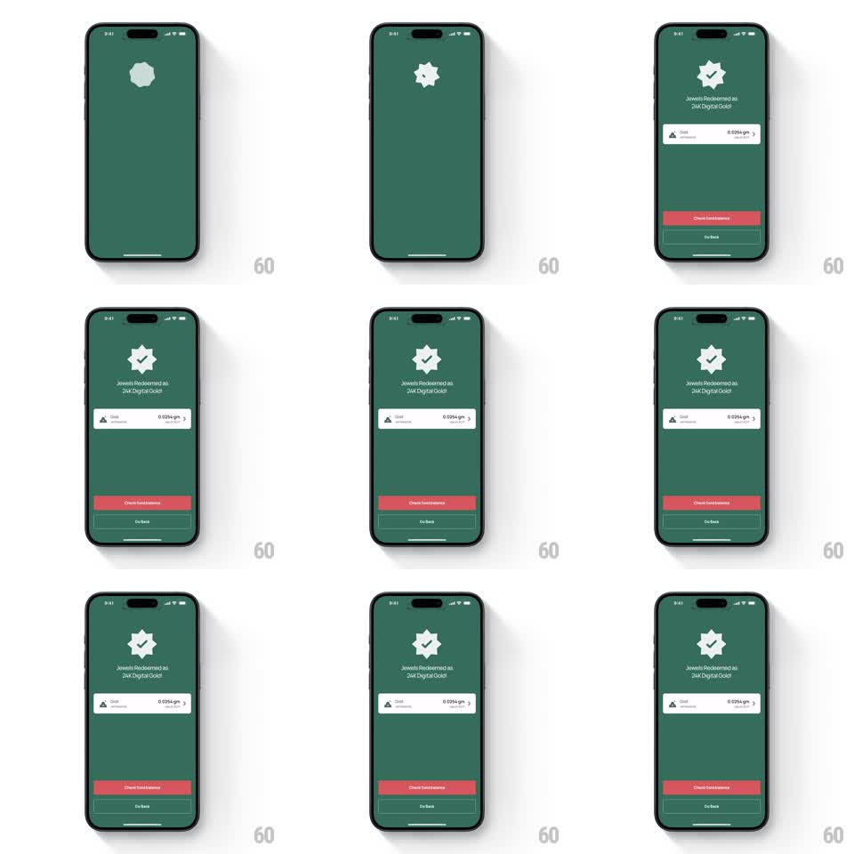

Media
Frame-by-frame

Rebuild this animation 1:1: Jupiter's redemption success - a check badge with a slowly spinning starburst behind it, then the result rows assembling underneath.

Rebuild this animation 1:1: Jupiter's redemption success - a check badge with a slowly spinning starburst behind it, then the result rows assembling underneath. ## Integration Integration: stack-agnostic spec - springs given as stiffness/damping, timed motions as duration + curve; map every value to your framework and animation library of choice. ## Scene Deep green success screen: a starburst (many-pointed star) badge at center holding a white check, "Jewels Redeemed as 24K Digital Gold" beneath, a white result card with gold amount, and a red CTA with a ghost Go Back button at the bottom. ## Motion spec Pattern: celebration badge with ambient rotation, ~2s. - The starburst fades in and begins rotating continuously (one revolution per ~8s, linear, infinite). - The check springs in over it (scale 0.4 to 1, stiffness 380 damping 13) with the starburst pulsing once (scale 1 to 1.06 and back) on landing. - The headline fades in below (250ms, 12px rise, ease-out), then the result card slides up (300ms, 16px, ease-out), then the CTA buttons fade in last (250ms), each beat ~150ms after the previous. - The rotation never stops; the screen idles with the starburst spinning. ## Calibration - The check pop is the only snappy beat - everything else is soft fades. - The starburst rotates around its true center with no wobble; its points are the only bright element, the check stays static on top. ## Reduced motion Badge fades in assembled; rotation off. ## Don't miss - The stagger order is check, headline, card, buttons - the result card arriving before the headline reads backwards. - The badge sits high with generous space; the card and buttons anchor low, leaving the middle quiet.